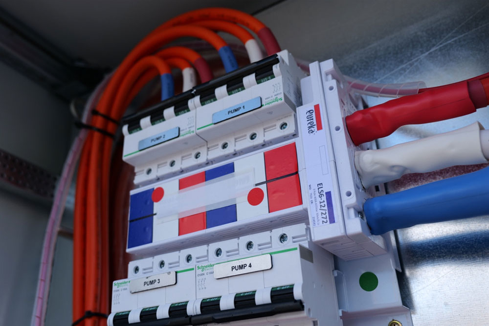

What Is AS 2941? Understanding Fire Pump Standards in Australia
AS 2941:2013 is the Australian Standard that specifies the mandatory requirements for designing, constructing, installing, and maintaining fire pump…
Read articleAline stocks a full range of Hercules’s Access Covers and Frames to meet all requirements and Australian standards for both Stormwater and Sewer access applications.
A full range of Gas tight covers and frames are also available in both; Class B for light duty situations, and D ratings for heavy duty loadings.

AS 2941:2013 is the Australian Standard that specifies the mandatory requirements for designing, constructing, installing, and maintaining fire pump…
Read article
Suited to your building, the reduction of vibration in your pipework is crucial to its function. Ensuring the water disruption flows with the…
Read article
A sprinkler booster is an assembly that allows fire brigade vehicles to supplement a building’s sprinkler and hydrant systems with additional water…
Read article
Sewer pump stations play a critical role in providing efficient water and sewage services. In its raw form, sewage is not environmentally safe and…
Read article
We’ve long been committed to offering our clients quality-focused pumping solutions that are designed for both residential and commercial…
Read article
Aline Pumps Blue Book Complete Product Guide Australia Aline Pumps proudly serves the Australian plumbing, building and fire industries with smart…
Read articleAsk our team to confirm the right fit for your application.
Ask for product adviceSend your application requirements to Aline Pumps or call 1800 018 999.